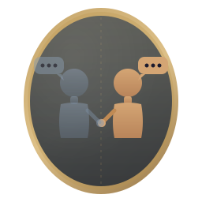

drop a WhatsApp .txt or a Facebook export to get started, or click ? for help.

These pipelines make past-you smarter. Run them once after importing your chats.
Analyzes your messages to learn relationships, life events, interests, and communication style.
Finds natural conversation turn-pairs from your chats to train on your speaking style.
Trains a LoRA adapter on your conversation style. Takes 20-30 minutes on Apple Silicon.
Converts the trained adapter to GGUF format for fast inference. Restart the app after this step.
All processing happens on your machine. Models are never uploaded.
.txt file to your computerRepeat for each chat you want to include. Group chats work too.
This is the richest source for pre-2015 data. Posts, comments, Messenger DMs — everything.
.mbox file or the Takeout/Mail/ folderEmails are threaded by References/In-Reply-To headers. Text-only (attachments are not imported).
~/Library/Messages/chat.dbQuit Messages.app before importing. Both SMS and iMessage are included. macOS Ventura+ format supported.
Desktop-only export. Private and group chats both supported.
data/tweets.js)Both tweets and DMs are imported. The JS wrapper is stripped automatically.
No official Discord export exists. DiscordChatExporter is the community standard.
Everything is processed locally on your machine. Nothing is uploaded. Ever. You can verify this yourself — the source code is open.
Chat with your 10-years-younger self.
This is how we'll identify your messages in group chats and conversations.
Use your full name as it appears in your chat exports.
Drop your chat exports here, or click the button to browse.
Drop .txt (WhatsApp) or folder (Facebook/Instagram) here
or
Creating semantic embeddings so past-you can recall relevant conversations.
The local AI reads your messages to build a structured identity profile — relationships, life events, interests, and your communication style.
Pick a year on the slider and start chatting with past-you.
Tip: click the ⚙ gear icon to fine-tune the model on your style for even more authentic replies.